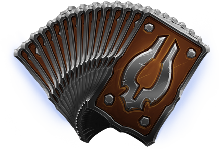

Information about Cards.

There are four types of cards in Eternal:
- Power
cards are the resource system for the game.
You draw Power cards from your deck and can play one per turn.
Decks must consist of between 1/3rd to 2/3rds of only Power cards.
- Unit
cards represent characters and creatures in the game.
- Attachment
cards are played either on a Unit (in the case of Weapons and Curses) or on a player avatar (for Relics, Relic Weapons, and Cursed Relics).
- Spell
cards have an immediate effect when played, and then are discarded.
"Fast Spells" can be played mid-combat or during your opponent's turn.
Eternal allows players to disenchant unwanted cards or any cards collected beyond the maximum of four into a quantity of shiftstone that can then be used to create new cards of the player's choice.
Shiftstone is also acquired after opening each card pack, from completing certain achievements or from faction rank up rewards.
Go back to the Main